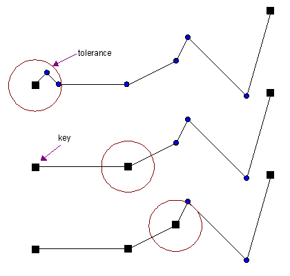

Radial Distance
Radial Distance is a brute force O(n) algorithm for polyline simplification. It reduces successive vertices that are clustered too closely to a single vertex, called a key. The resulting keys form the simplified polyline. This process is illustrated below:

The first and last vertices are always part of the simplification, and are thus marked as keys. Starting at the first key (the first vertex), the algorithm walks along the polyline. All consecutive vertices that fall within a specified distance tolerance from that key are removed. The first encountered vertex that lies further away than the tolerance is marked as a key. Starting from this new key, the algorithm will start walking again and repeat this process, until it reaches the final key (the last vertex).
Interface
template <unsigned DIM, class InputIterator, class OutputIterator>
OutputIterator simplify_radial_distance (
InputIterator first,
InputIterator last,
typename std::iterator_traits <InputIterator>::value_type tol,
OutputIterator result)
Applies the Radial Distance routine to the range [first, last)
using the specified radial distance tolerance tol. The resulting simplified polyline
is copied to the output range [result, result + m * DIM), where m is the
number of vertices of the simplified polyline. The return value is the end of the output range:
result + m * DIM.
Input (Type) Requirements
DIMis not zero, whereDIMrepresents the dimension of the polyline- The
InputIteratorvalue type is convertible to the value type of theOutputIterator - The range
[first, last)contains vertex coordinates in multiples ofDIM, e.g.: x, y, z, x, y, z, x, y, z whenDIM= 3 - The range
[first, last)contains at least two vertices tolis not zero
In case these requirements are not met, compile errors may occur, or the entire input
range [first, last) is copied to the output range
[result, result + (last - first)).
Implementation Details
Nothing special, just a single loop over all vertices that calculates point-point distances. As soon as a key is found, it is copied to the output range.
Usage
float tolerance = 10.f; // point-to-point distance tolerance
std::vector <float> polyline; // original polyline, assume not empty
std::vector <float> result; // resulting simplified polyline
// simplify the 2d polyline
psimpl::simplify_radial_distance <2> (
polyline.begin (), polyline.end (),
tolerance, std::back_inserter (result));
Note that the results container does not need to match the polyline container.
You could, for instance, use a C-style double array.